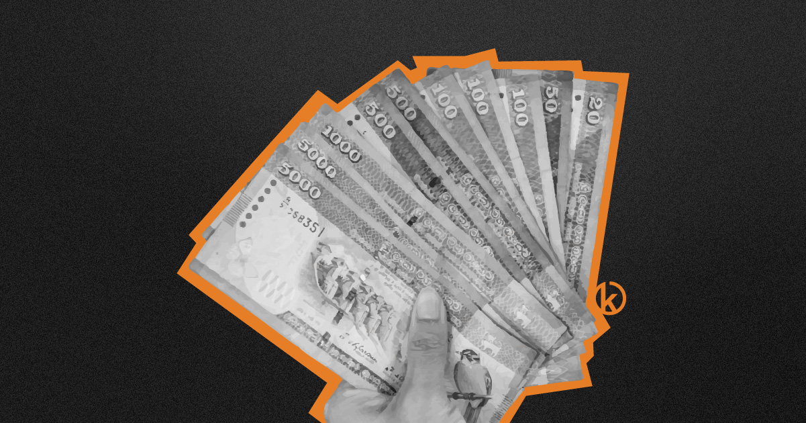

Measure to Manage:
Surviving the Cost of Living

The peak of the crisis may have passed, but the prices haven't. Inflation has cooled, but our grocery bills are still burning. In this "new normal," focusing on prices you can't control is pointless. But you can control your efficiency.
We've all been there. You walk into Keells or Cargills, grab the essentials, and the bill hits LKR 15,000 before you've even reached the rice aisle. It’s painful. It’s stressful. And for many of us, the natural reaction is the "Ostrich Method": swipe the card, crumple the receipt, and try not to think about it until the salary hits.
The "Ostrich Method" is Costing You
Ignoring your outflow because it hurts to look at is a survival mechanism, but it’s a dangerous one. When you don't track, you operate on feelings, not facts. You feel like you're broke because of the big bills (Rent, LECO, Water), but often, the real leaks are invisible.
That daily tuk-tuk ride because you woke up 10 minutes late? That LKR 450 short-eat run? That subscription you forgot to cancel? Without measuring them, they don't exist in your mind. But your bank balance knows they do.
"You can't manage what you don't measure."
— Peter Drucker (Management Consultant)
Data Beats Anxiety
Anxiety thrives on the unknown. "Will I have enough for the loan payment?" is a terrifying question if you don't have the data.
Tracking creates a boundary. When you use a tool like Kaasi to log every rupee, you aren't just recording history; you are building a map. Suddenly, you see that you spent LKR 8,000 on "Snacks" last month. That’s a shock, but it’s also power. Now you have a choice. You can cut that down to LKR 4,000 and instantly give yourself a "raise" of 4,000 rupees.
How to Start (Without Going Crazy)
You don't need to be an accountant. You just need to build the habit.
- Track Everything for 30 Days: Don't judge yourself. Just observe. Buy a tea? Log it. Pay the bus fare? Log it.
- Use Local Context: Don't struggle with USD apps. Use an app built for LKR that understands our context (like Credit Card installments vs. cash transactions).
- Review Once a Week: Open your "Monthly Breakdown" on Sunday. Just knowing where the money went brings a surprising amount of peace.
The Bottom Line
Surviving the current cost of living isn't just about earning more; it's about optimizing what you have. The first step to efficiency is visibility. Stop hiding from the numbers. Measure them, manage them, and take back control.